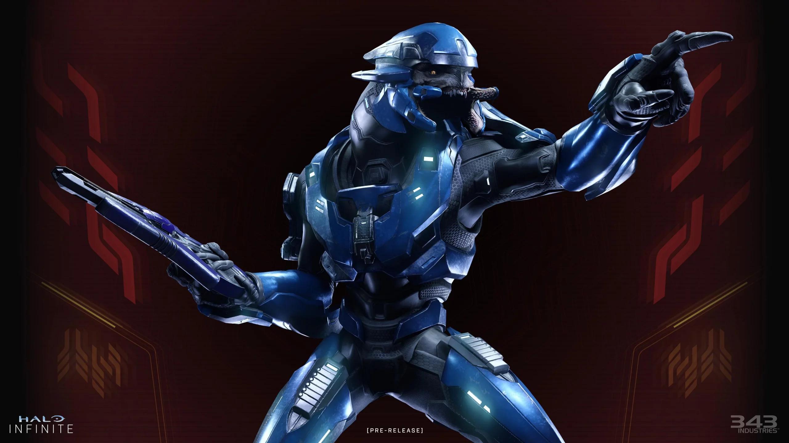
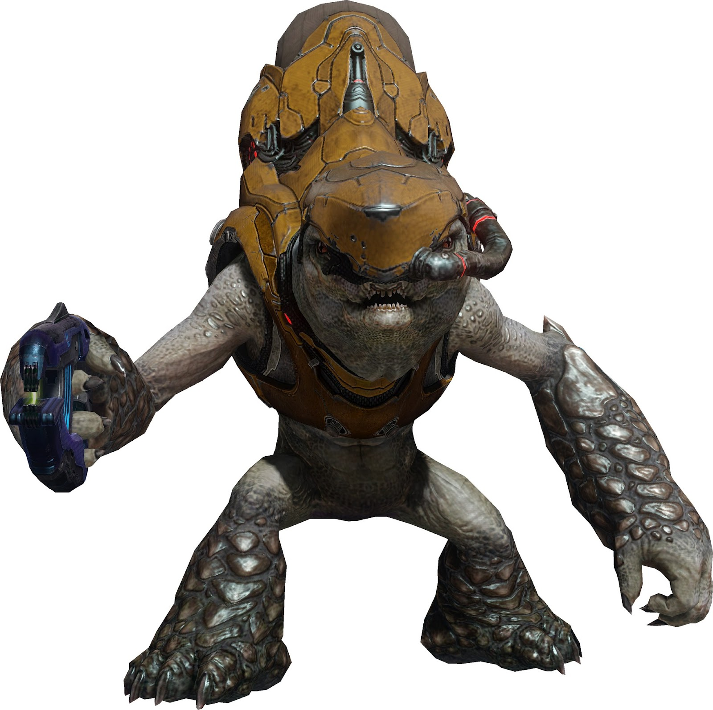
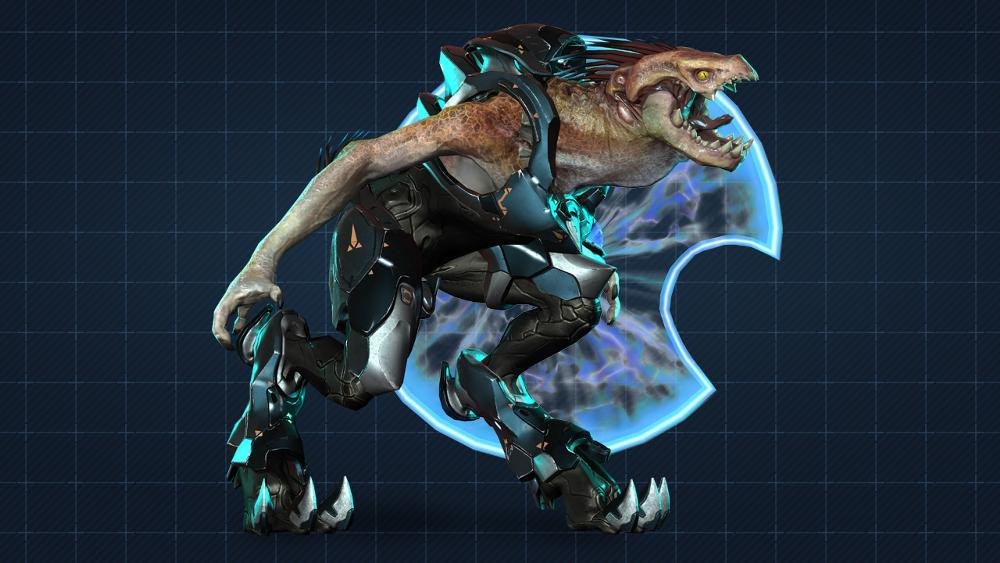
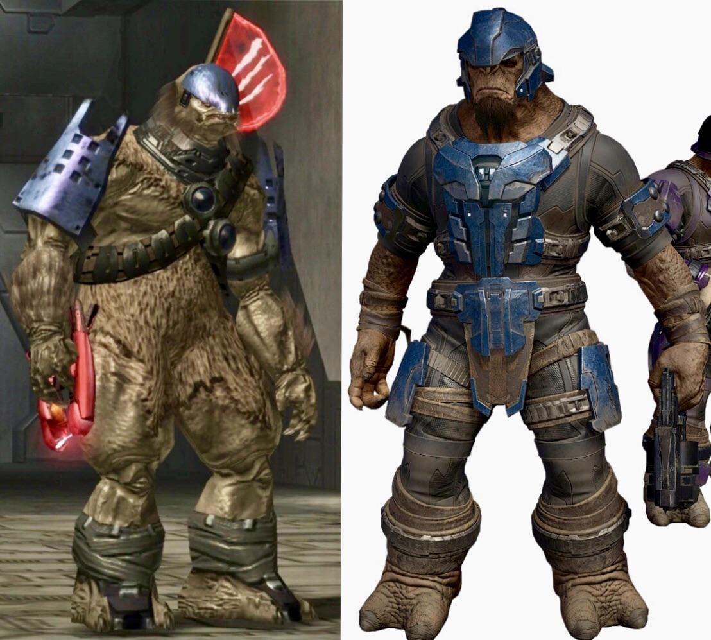

| Apariencia | Altos, de complexión fuerte, con mandíbula dividida y armadura energética avanzada. |  |
|---|---|---|
| Función | Comandantes y guerreros de élite del Covenant. Tácticos, lideran escuadrones y participan en primera línea de combate. | |
| Habilidades | Combate cuerpo a cuerpo, uso de espadas de energía, estrategias de batalla, sigilo con camuflaje activo. | |
| Ventajas | Altamente disciplinados y mortales en combate cercano. Gran capacidad de liderazgo. | |
| Debilidades | Demasiado dependientes del honor y jerarquía. Su orgullo puede nublar el juicio. |
| Apariencia | Pequeños y robustos, usan tanques de respiración debido a su biología. Generalmente en grupos. |  |
|---|---|---|
| Función | Infantería básica del Covenant. Realizan ataques masivos y apoyan con granadas o armas de plasma. | |
| Habilidades | Numerosos, manejan explosivos y pueden pilotar vehículos ligeros. | |
| Ventajas | Fáciles de reemplazar, buenos en combate en grupo y útiles para abrumar al enemigo. | |
| Debilidades | Fácilmente asustados, de poca iniciativa propia y con poca resistencia individual. |
| Apariencia | Esbeltos, con apariencia aviar o reptiliana. Usan escudos de energía y armas de precisión. |  |
|---|---|---|
| Función | Francotiradores o defensores. Utilizan escudos para protegerse mientras disparan desde la distancia. | |
| Habilidades | Precisión, agilidad, manejo de escudos y rifles de largo alcance. | |
| Ventajas | Difíciles de golpear y efectivos en combate a distancia. Excelente defensa en puntos estrechos. | |
| Debilidades | Dependientes de su escudo. Si se desestabiliza, son vulnerables rápidamente. |
| Apariencia | Altos, musculosos y peludos. Muy intimidantes, con gran fuerza física y armamento pesado. |  |
|---|---|---|
| Función | Unidades de choque del Covenant. Ideales para asaltos agresivos y destrucción directa. | |
| Habilidades | Fuerza bruta, resistencia, uso de armas pesadas, y ataques cuerpo a cuerpo devastadores. | |
| Ventajas | Temibles en combate. Pueden resistir mucho daño y causar caos entre las filas enemigas. | |
| Debilidades | Impulsivos, carecen de disciplina táctica. Su agresividad puede ser usada en su contra. |